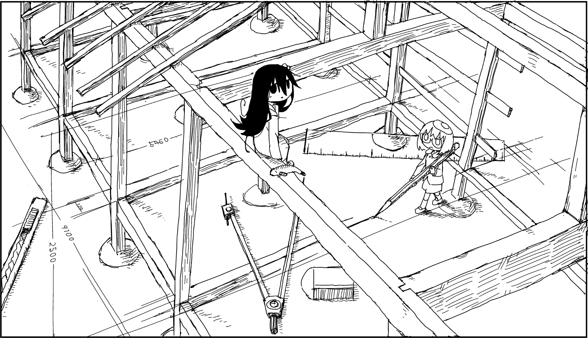

Signature
is a pseudonymous Japanese manga artist. Their notable works include the post-apocalyptic iyashikei manga Girls' Last Tour and the four-panel surreal comedy manga Shimeji Simulation.
Tsukumizu has been reading extensively since they were in primary school, and read novels all through upper secondary. They cite Haruki Murakami's Norwegian Wood and Dance Dance Dance, and Kaori Ekuni's Kirakira Hikaru as having influenced the themes behind Girls' Last Tour.[1]. Novels by Osamu Dazai, especially No Longer Human, are also referenced several times throughout Shimeji Simulation, likely also being inspirations for some of the themes of their works.
In upper secondary, they started to become interested in anime, and began drawing moe in their third year. This interest would bloom to encompass manga as well. Tsukumizu attended the Aichi University of Education, and wished to study painting to become an art teacher. At that temporal juncture, they only saw drawing manga as a hobby.[2][1]
In their second year of post-secondary, Tsukumizu began drawing manga and was invited to a manga circle by a friend. They regularly uploaded their work on the Internet, and this caught the eye of someone at the publishing company Shinchosha. Tsukumizu's first commercially published work was Girls' Last Tour,[1] which was adapted into an anime in 2017.
Tsukumizu's next major series, Shimeji Simulation, began serialization in Media Factory's Comic Cune magazine on 26 January 2019 and had its last chapter published in the same magazine on 27 November 2023.[3][4] On 26 June 2026, Tsukumizu launched A Collection of Fragments From Megacity, prologue manga to the Girls' Last Tour series.[5]
Tsukumizu's art has been described as heartwarming, surreal, and often poetic.[6] They cite contemporary manga authors such as Tsutomu Nihei, as well as historical artists like Paul Klee as having influenced their art style.[7] Shaky and sometimes broken outlines are a common aspect of their art, which they claim was inspired by the work of Studio Ghibli animator Shinya Ohira.[8]